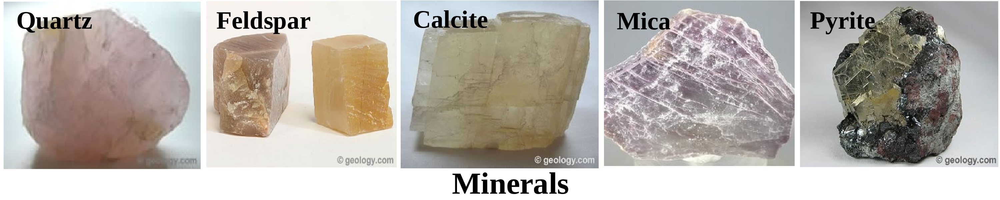
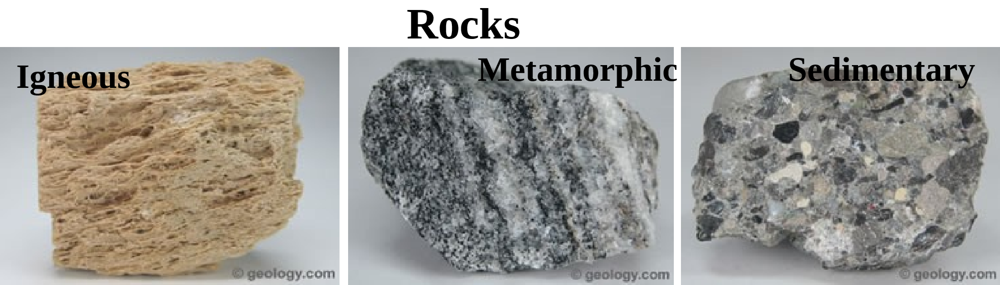
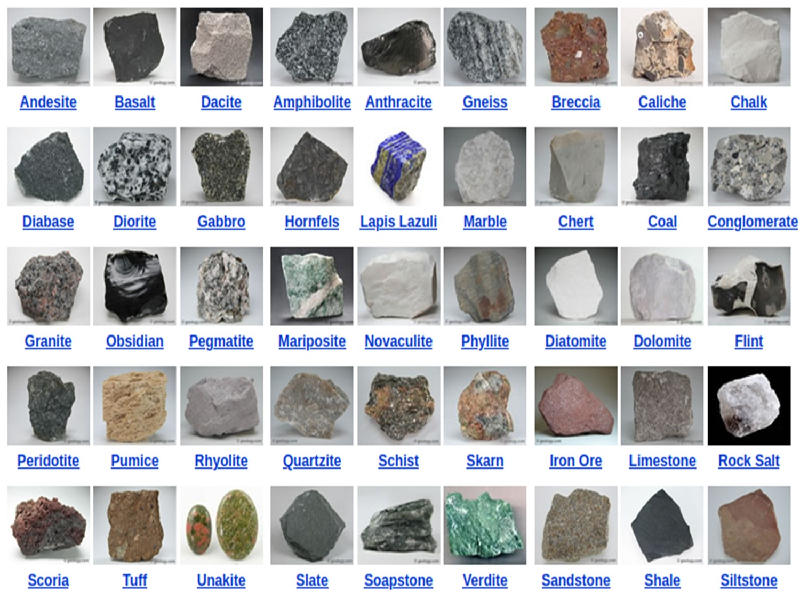

Section 11.2 Rocks & Minerals
Rocks and Minerals
Rocks and minerals are naturally occurring substances found in the earth’s crust. Rocks are made up of one or more minerals, while minerals are pure substances with a definite chemical composition and crystalline structure. A mineral may be a single element such as copper (Cu) or gold (Au), or it may be a compound made up of a number of elements. About 2,500 different minerals have been described. Rocks are made up of one or more minerals but it does not have a definite chemical compositions. Minerals are classified based on their chemical composition and crystal structure. Some common minerals include quartz, feldspar, mica, calcite, and pyrite Figure 11.2.2. Minerals have a wide range of uses, from building materials to electronics and jewelry.
-
Quartz: is composed of silicon and oxygen atoms in a continuous framework of \(SiO_4\) silicon-oxygen tetrahedra, with each oxygen atom shared between two tetrahedra, giving an overall chemical formula of \(SiO_2\text{.}\) It is a six-sided prisms with pointed ends (known as hexagonal crystals) with no cleavage. The color of quartz can vary depending on impurities, with clear quartz being colorless, while other colors such as pink, purple, and brown can be caused by trace amounts of other elements.
-
Feldspar: is a group of minerals that are the most abundant minerals in the Earth’s crust comes with range of color, harder than glass and softer than quartz. The feldspar group is divided into two major groups: alkali feldspar and plagioclase feldspar. Alkali feldspar includes minerals such as orthoclase and microcline, while plagioclase feldspar includes minerals such as albite, anorthite, and labradorite.
-
Mica: Mica is a group of minerals that is found in rocks such as granite, gneiss, and schist. It is composed of silicate minerals with varying amounts of aluminum, potassium, magnesium, iron, and water. Mica is known for its unique properties, such as its ability to split into thin, flexible sheets, its excellent insulating properties, and its resistance to heat and chemicals. These properties make it a valuable material in a wide range of industries, including electronics, construction, cosmetics, and paint manufacturing.
-
Calcite: Calcite is a carbonate mineral that is commonly found in sedimentary rocks such as limestone and marble. It is composed of calcium carbonate \((CaCO_3)\) and it is relatively soft. Calcite has many unique properties, including its ability to exhibit birefringence, a phenomenon where light passing through the mineral is split into two different rays, which can produce a double image. It is also fluorescent under ultraviolet light, and some varieties can even exhibit phosphorescence, meaning they continue to glow after the light source is removed.
-
Pyrite: Pyrite, also known as "fool’s gold," is a common mineral that is found in sedimentary, metamorphic, and igneous rocks around the world. It is composed of iron sulfide \((FeS_2)\) and has a metallic luster, giving it a shiny, brassy-yellow appearance. Pyrite is relatively hard and can scratch glass. It is often found in association with other minerals, such as quartz, calcite, and fluorite. Pyrite has been used as a source of sulfur for the production of sulfuric acid, and it is also used as a decorative stone and in jewelry. One of the most notable properties of pyrite is its ability to generate sparks when struck against steel or another hard surface. This property has made pyrite a popular material for use in flintlock firearms and other types of fire-starting tools.
Subsection 11.2.1 Rocks

Rocks are made up of one or more minerals but it does not have a definite chemical compositions. The three types of rocks are given in Figure 11.2.3.
-
Igneous rocks are formed from the solidification of magma or lava, and they make up a significant portion of the Earth’s crust. Common examples of igneous rocks include granite, basalt, and obsidian. Igneous rocks can form either on the Earth’s surface (extrusive) or beneath the surface (intrusive). Hence, it is of two types. Extrusive igneous rocks, such as basalt and andesite, are formed when magma or lava cools and solidifies quickly on the Earth’s surface. These rocks often have a fine-grained texture because the rapid cooling does not allow time for large crystals to form. Intrusive igneous rocks, such as granite and gabbro, are formed when magma cools and solidifies slowly beneath the Earth’s surface. These rocks often have a coarse-grained texture because the slow cooling allows time for large crystals to form. Igneous rocks provide valuable information about the Earth’s history and geologic processes. For example, the composition of igneous rocks can give insight into the conditions and processes that led to their formation, such as volcanic activity or the melting and mixing of different rock types. Igneous rocks are also important economically, as they are a source of many valuable minerals and metals, such as copper, gold, and silver.
-
Sedimentary rocks are formed from the accumulation and cementation of sedimentary particles such as sand, silt, and clay. It is formed in layers. Examples of sedimentary rocks include sandstone, shale, and limestone. Sedimentary rocks cover about 75% of the Earth’s surface, and they are the most common type of rock found at the Earth’s surface. Sedimentary rocks provide clues about the Earth’s history, such as the type of environment in which they were formed and the types of organisms that lived during that time. For example, fossils found in sedimentary rocks provide valuable information about the evolution of life on Earth. Sedimentary rocks are also important economically, as they are a source of many valuable minerals and resources, such as oil, gas, and coal. Fragmental and conglomerate sedimentary rocks are formed from the accumulation and lithification of rock fragments and other debris.
-
Metamorphic rocks are formed from the transformation of existing rocks (igneous, sedimentary, or other metamorphic rocks) due to heat, pressure, or chemical activity, without melting. Examples of metamorphic rocks include marble, slate, and gneiss. Metamorphic rocks can form deep beneath the Earth’s surface, where they are subjected to extreme temperatures and pressures, or closer to the surface, where they are exposed to hot fluids or intense deformation. Metamorphic rocks can be classified into two main types: foliated and non-foliated. Foliated metamorphic rocks, such as slate, phyllite, schist, and gneiss, have a layered or banded appearance due to the alignment of mineral grains under pressure. Non-foliated metamorphic rocks, such as marble and quartzite, do not have a layered or banded appearance and are typically composed of a single mineral or mineral type. The texture and composition of metamorphic rocks can also provide information about the tectonic environment and geologic history of the region in which they formed. Metamorphic rocks provide valuable information about the Earth’s history and geologic processes. For example, they can provide evidence of past mountain-building events and the movement of tectonic plates. Metamorphic rocks are also important economically, as they are a source of many valuable minerals, such as gold, silver, and copper. List of some common rocks are given in Figure 11.2.4.

Some common Rocks1
geology.com/
Basaltic Rock:, (or basalt) is a volcanic rock that is formed from the rapid cooling and solidification of lava beneath oceanic surface. It is typically dark-colored, dense, and fine-grained rock. It is one of the most common types of volcanic rocks found in many parts of the world. Basalts are often found in areas of volcanic activity such as mid-ocean ridges, island arcs, and hotspots. Basalts can be used as a building material, a road aggregate, and as a source of crushed stone.
Granitic Rock:, (or granite) is an intrusive igneous rock that is composed mainly of quartz, feldspar, and mica minerals. It is a coarse-grained rock that forms from the slow cooling and solidification of magma beneath the continental crustal surface. Granite is typically light-colored and has a granular texture. It is a very durable rock and is often used as a building material for countertops, flooring, and monuments. It can also be used as a decorative stone in landscaping. Granitic rocks are found all over the world, but they are particularly common in areas with tectonic activity such as mountain ranges and volcanic regions.
Coal is a combustible black or brownish-black sedimentary rock. It is formed over millions of years from the remains of dead plants and animals that have been buried and subjected to high temperatures and pressures. Coal is primarily used as a fuel. There are several types of coal, including anthracite, bituminous, and lignite, which vary in their carbon content and properties.
Limestone is a sedimentary rock composed mostly of calcium carbonate (\(CaCO_3\)). It forms from the accumulation of shells, coral, and other marine debris, as well as from the precipitation of calcium carbonate from water. Limestone is typically light-colored and can have a wide range of textures, from fine-grained to coarsely crystalline. It is often used as a building material and in the production of cement, lime, and other industrial materials. Limestone is also used as a decorative stone in landscaping and architecture, and can be carved into sculptures and other works of art. Some types of limestone, such as dolomite and travertine, can be formed by chemical precipitation from groundwater, rather than by the accumulation of marine debris. Limestone is vulnerable to weathering and erosion, and can be dissolved by acidic water or carbon dioxide in the atmosphere, forming features such as caves, sinkholes, and limestone pavements.
Shale is a fine-grained sedimentary rock that is composed primarily of clay minerals, such as illite, kaolinite, and smectite, as well as other minerals such as quartz, feldspar, and calcite. Shale is typically gray or black in color and has a laminated, or layered, appearance due to the parallel alignment of clay particles. It is often used as a source of oil and natural gas, as the fine-grained nature of the rock allows it to serve as a reservoir for hydrocarbons. Shale is also used as a building material, especially in regions where it is abundant. One of the unique properties of shale is its ability to split into thin, flat layers, a property known as fissility. This property makes shale useful as a building material and as a decorative stone in architecture. However, the high water content of shale can make it unstable, and it is prone to weathering and erosion over time.
Slate Slate is a fine-grained metamorphic rock that is derived from shale or mudstone. It is composed primarily of clay minerals such as illite, chlorite, and muscovite, along with small amounts of quartz, feldspar, pyrite, and other minerals. Slate typically has a flat, smooth surface and is highly fissile, meaning it can be split into thin, durable sheets. It is often gray in color, but can also be green, black, or red, depending on the minerals present. Slate can be used as a roofing material, flooring, and as a decorative stone in architecture. Slate forms from the compaction and recrystallization of clay and other fine-grained sedimentary rocks under high pressure and temperature. The pressure causes the clay minerals to reorient themselves into thin, parallel layers, which gives slate its characteristic fissility (fissility is the property of a rock to split easily along thin closely spaced parallel layers). The minerals present in the original sedimentary rock, as well as the degree and duration of heat and pressure, determine the color and texture of the resulting slate. Slate is known for its durability, resistance to weathering and erosion, and fire resistance, which makes it a popular choice for roofing and other construction applications.
Subsection 11.2.2 Coral Reef
Coral reefs are built by colonies of small organisms called coral polyps. Coral reefs are found in shallow and clear waters in tropical and subtropical regions around the world. Coral reefs are composed of "reef" limestone which is formed from the accumulation of the calcium carbonate skeletons of coral polyps. Over time, the accumulation of these skeletons forms the hard, rocky structure of the reef.